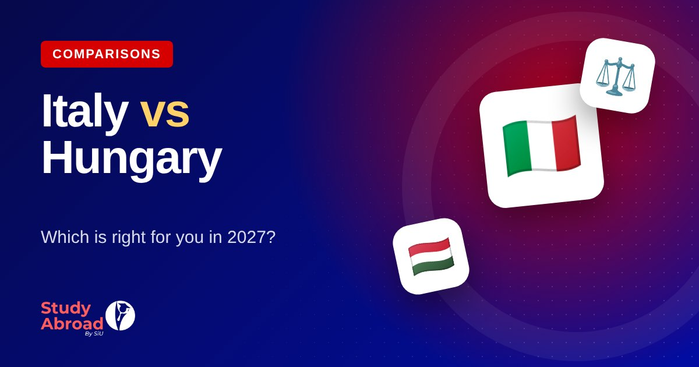

Italy vs Hungary: Which Is Better for Pakistani Students in 2027?
Comparing Italy and Hungary for Pakistani students: fees, scholarships, living costs, English requirements, intakes and career prospects — so you can choose the right country.

⭐ Key takeaways
- Italy can be close to free if you qualify for a regional income-based scholarship.
- Hungary has lower day-to-day living costs and a fully-funded government scholarship.
- Your family income documents and budget usually decide which is better.
Italy and Hungary are two of the most popular European choices for Pakistani students. Both offer EU degrees, English-taught programmes and Schengen residence — but they suit different profiles.
Fees and scholarships
Italy: public universities link fees to family income, and regional scholarships can waive fees and add a yearly allowance for eligible students.
Hungary: self-funded tuition is moderate, and the Stipendium Hungaricum government scholarship offers fully-funded places through a competitive process with HEC nomination.
Living costs
Hungarian cities, especially outside Budapest, are generally cheaper to live in. Italian costs vary a lot by city — the north tends to be more expensive.
English requirements
Both countries have universities that accept an MOI letter or their own English test. Italy is often slightly more flexible.
Quick comparison
- Best for income-based scholarships: Italy
- Best for low living costs: Hungary
- Best for engineering & design: Italy
- Best for a competitive fully-funded scholarship: Hungary
Get free one-to-one counselling from Study Abroad By SiU.
Frequently asked questions
Which is cheaper, Italy or Hungary?
Can I apply to both?
General information only, not legal or immigration advice. Rules, fees and deadlines change — check official sources or ask our counselors about your case. Last reviewed 18 Oct 2026.